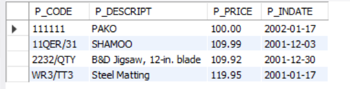

Finals Lab Task 5 - Using SQL Views, Stored Procedures, and Stored Functions
In this lab activity, I worked with SQL Views, Stored Procedures, and Stored Functions in MySQL to create reusable database objects and automate specific queries and updates. The task was performed on the inventory database which contains tables for Products, vendors, and vendorsACode. This task focused on data filtering, aggregation, updating, and creating custom functions with parameters.
Steps I Followed
- Created the database and tables:
- Used
CREATE DATABASE inventory;to make the database. - Used
USE inventory;to select the database. - Created tables
Products,vendors, andvendorsACodewith the required columns and constraints. - Inserted sample data into the tables for testing.
- Used
- Created Views:
- Created a view
products_from_2002to display vendor codes, vendor names, product descriptions, and product in-date for all products withp_indatefrom 2002 onwards. - Created a view to list all products with prices between 100 and 150.
- Created a view to compute the total price of all products (
P_ONHAND × P_PRICE) sold by specific vendors (v_codes21344, 23119, and 24288).
- Created a view
- Created Stored Procedure:
- Developed a stored procedure to update the vendor name from 'Bryson,Inc.' to 'Bryson and Co.' based on a parameter.
- Created Stored Function:
- Created a stored function
get_products_by_vendorthat takes two parameters (v_codeandv_state) and returns all product descriptions and prices for the specified vendor code and state.
- Created a stored function
- Called and tested all SQL objects:
- Used
SELECTto test views. - Used
CALLto run the stored procedure and verify the update. - Used
SELECTto call the stored function and display results.
- Used
Screenshot of Task 1 - View products from 2002 onwards
Screenshot of Task 2 - Products priced between 100 and 150
Screenshot of Task 3 - View total price of products by specific vendors

Screenshot of Task 4 - Stored Procedure updating vendor name